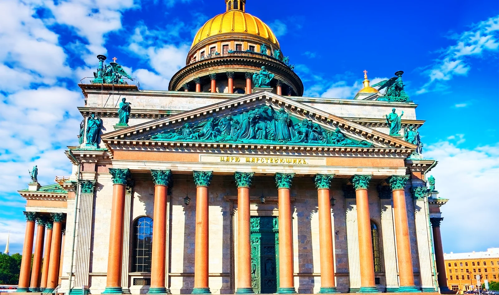
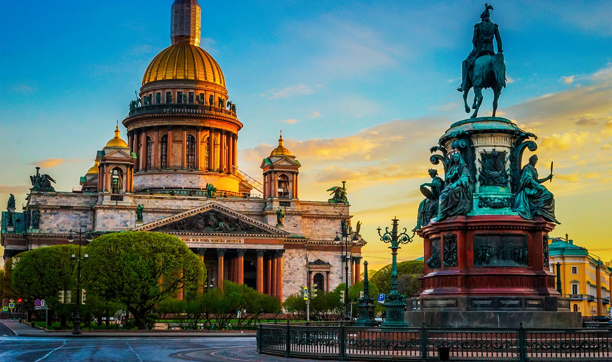
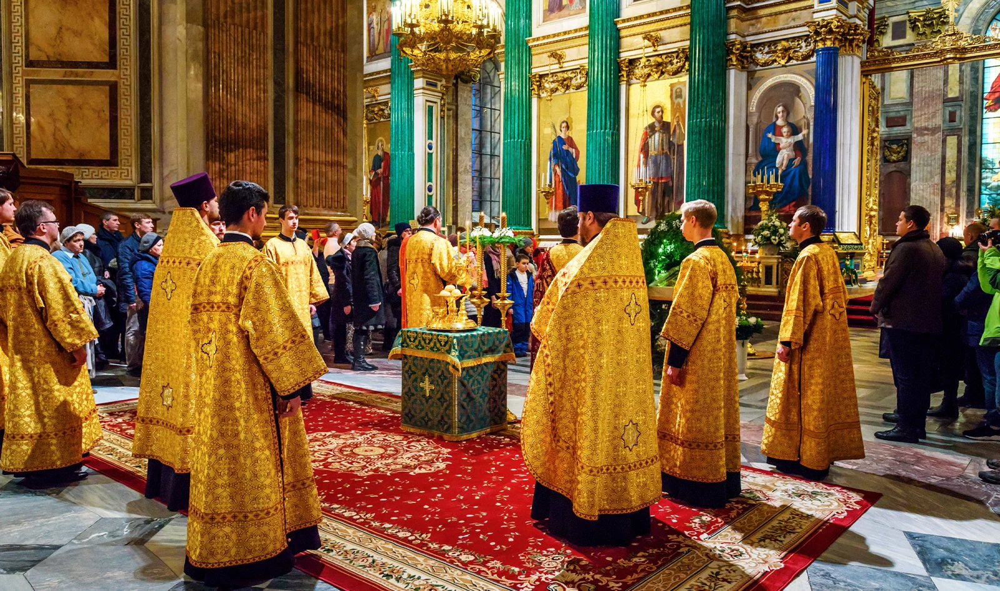
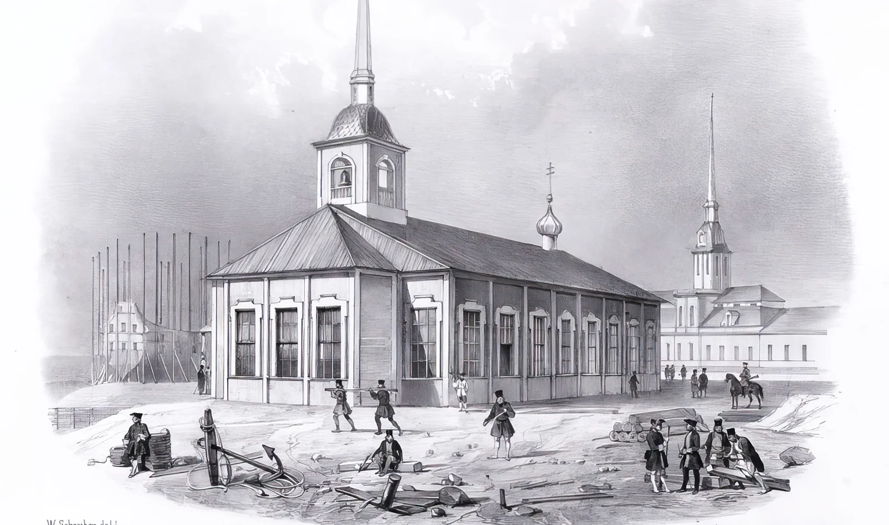
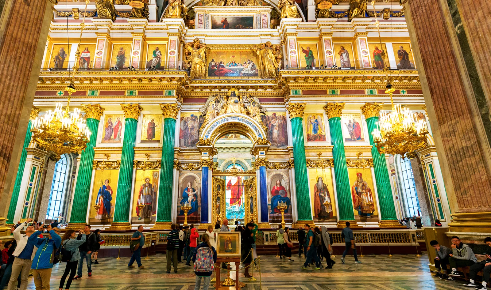

Исаакиевский собор в Санкт-Петербурге: интересные факты, лайфхаки и немного мистики
Автор: О! Редакция
История Исаакиевского собора и детали посещения: любопытные сюжеты, архитектура и практические нюансы, которые помогают глубже разобраться в известной достопримечательности.
Читать полную статью на блоге Островка →



Фото: V_E / Shutterstock.comИсточник изображения


Фото: FOTOGRIN / Shutterstock.comИсточник изображения


Фото: Elena Odareeva / Shutterstock.comИсточник изображения


Фото: cathedral.ruИсточник изображения


Фото: Lobanov Yury / Shutterstock.comИсточник изображения